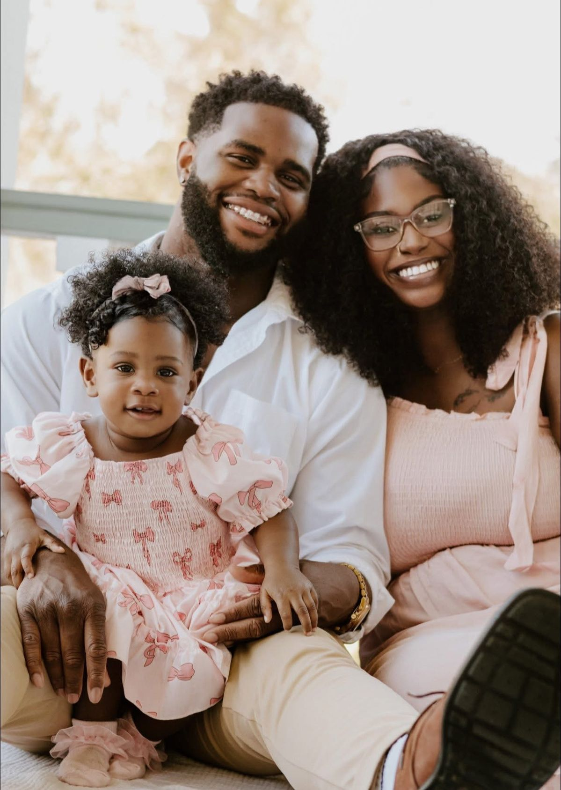
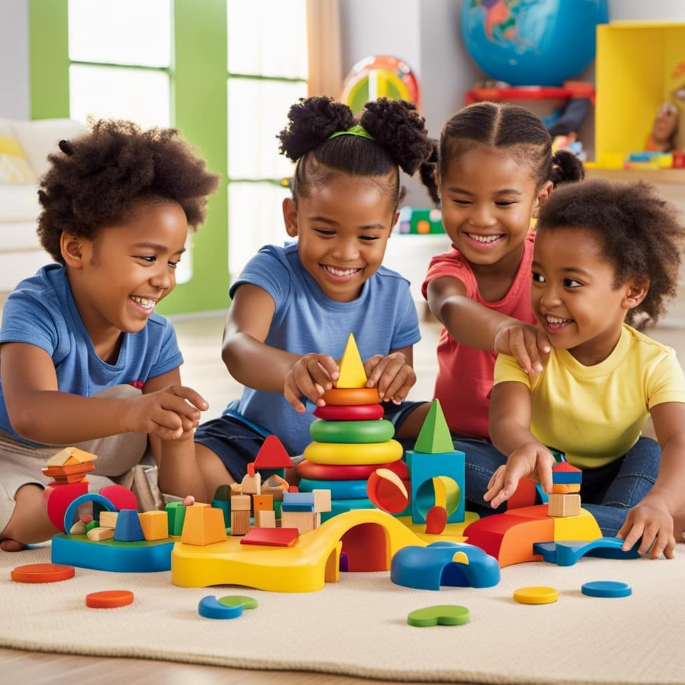

My childhood was a blend of curiosity, creativity,and close family bonds that continue
to shape the person I am today.Being the firstborn taught me responsibility early.
Memorable Childhood

I remember spending hours dismantling toys just to see how they worked,sparking my love for problem-solving.
Afternoons were often
filled with playful adventures with friends,teaching me the joy of collaboration and
imagination.
Family interactions
Growing up in a supportive family taught me resilience and the importance of sharing knowledge.Simple tradition,
like storytelling around dinner table
,nurtured my curiosity and appreciation for learning.
Formative Moments
Those early explorations and family lessons instilled in me a love for creativity and a drive to make ideas tangible- qualities that
guide both my studies in Software Engineering and my entrepreneurial journey today.